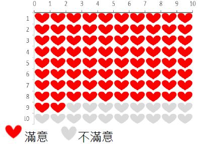

| 人工膝關節置換手術 | 不接受人工膝關節置換手術 | |
|---|---|---|
| 治療方式 | 手術方式：「全人工」或「部份」膝關節置換手術。 材質選擇：目前膝關節主要材質為金屬或陶瓷。 麻醉方式：一般以半身麻醉為主，除非特殊狀況才採用全身麻醉 復健治療：需配合術後短期復健計畫，是否需長期復健需由醫師評估。 |
利用下列方式可以減緩疼痛: 1.藥物治療 2.冰敷、熱敷 3.輔具 4.復健運動 |
| 優點 |
1.100個病人裡面有80個病人術後疼痛改善或消失，而且可以恢復日常生活的活動。 2.追蹤100個接受手術的人，追蹤2至17年，有82人感到滿意。  |
1.能部分減輕膝關節的不舒服。 2.可以避免人工膝關節置換手術可能產生的風險及併發症。 |
| 缺點 | 1.可能需再次手術：大多數的人工關節可以使用超過一、二十年，但有些人可能需要再次接受人工關節置換手術，追蹤100個接受手術的人，追蹤15年，有12個人需要再次手術。 2.膝關節活動角度受限：可能不如過去活動順暢，關節不建議過度彎曲。 |
藥物治療、復健運動或輔具的治療效果較為短暫，無法長時間緩解症狀。 |
| 風險/副作用 |
1.麻醉風險：對健康的人來說麻醉發生併發症並不常見，但所有麻醉都是有風險的。 2.其他風險： (1)手術部位感染，例如傷口感染1%、嚴重感染1%，若發生嚴重感染可能須重新置換人工膝關節 (2)傷口癒合不良(約1%) (3)血栓(約1%) (4)膝關節不穩定(約10-20%)。 3.約有10%手術後的病人有程度不一的關節僵硬或攣縮，適度的運動有助於降低此狀況的發生。 |
1.如果拖延太久才接受手術，您的肌肉力量、膝關節活動角度可能會大幅下降，而影響手術效果。 2.止痛消炎藥的副作用： 消化性潰瘍、腎功能下降及藥物過敏。 3.關節注射藥物的可能副作用： 感染、注射後腫痛、注射部位出血。 |
| 不接受人工膝關節置換手術 | 程度(自身狀況越接近哪種，就選擇越靠近該敘述的選項) | 接受人工膝關節置換手術 |
|---|---|---|
| 關節疼痛不會影響我的日常活動 |
|
我想要能做一些簡單的活動，像是爬樓梯、做家事或游泳 |
| 現在大多數的日子我都覺得狀況還不錯 |
|
現在大多數的日子我常常感覺很疼痛，過得不好 |
| 我擔心10或20年後可能要再次進行手術 |
|
我了解且接受日後有可能需要再一次進行手術 |
| 我無法配合手術後花幾個禮拜的時間做復健運動 |
|
我願意手術後花幾個禮拜的時間做復健運動 |
| 我非常害怕手術可能會有的風險 |
|
為了減輕關節疼痛，我願意承擔手術的風險 |
人工膝關節置換手術較能改善嚴重退化性膝關節炎造成的疼痛及關節功能
人工膝關節置換手術能夠百分之百改善退化性膝關節炎造成的疼痛
在接受人工膝關節置換手術後，我仍然需要配合醫師做復健運動
雖然統計上人工膝關節可以用上15年，但仍有可能需要再次手術
我已經確認好想要的治療方式，我決定選擇：（下列擇一）
我目前還無法決定